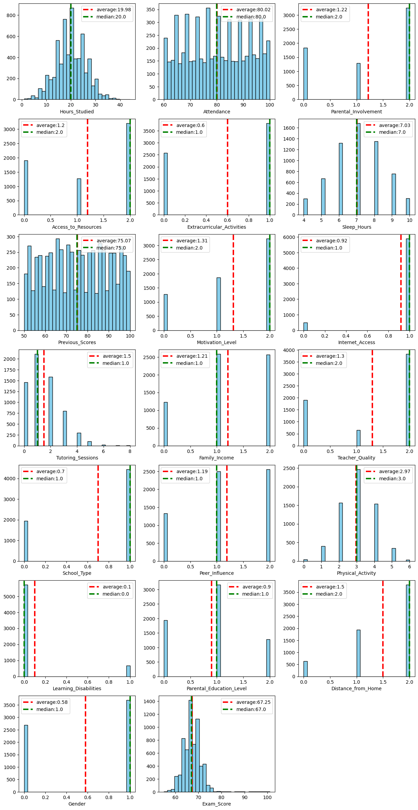
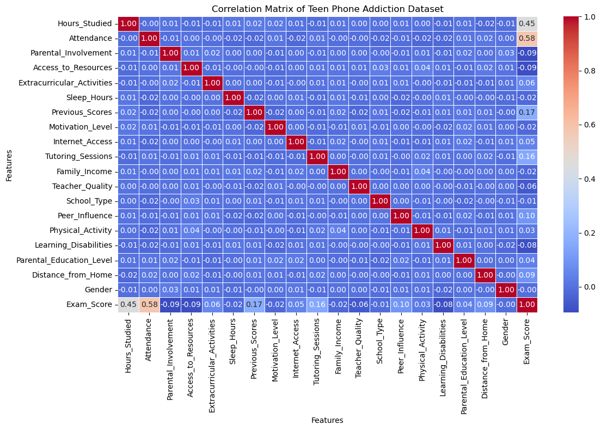
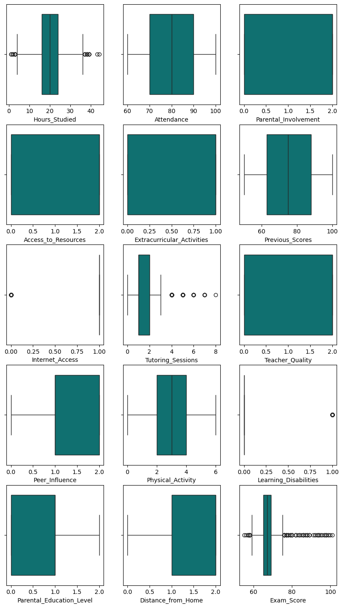
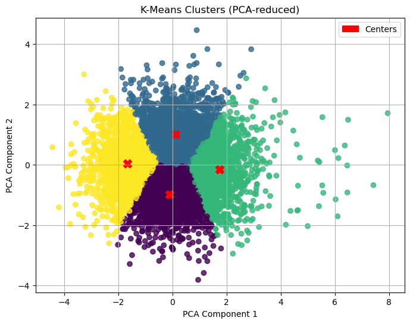

import pandas as pd
import seaborn
import matplotlib.pyplot as plt
import numpy as np
from sklearn.preprocessing import LabelEncoder
df = pd.read_csv("StudentPerformanceFactors.csv")
df.info()
<class 'pandas.core.frame.DataFrame'>
RangeIndex: 6607 entries, 0 to 6606
Data columns (total 20 columns):
# Column Non-Null Count Dtype
--- ------ -------------- -----
0 Hours_Studied 6607 non-null int64
1 Attendance 6607 non-null int64
2 Parental_Involvement 6607 non-null object
3 Access_to_Resources 6607 non-null object
4 Extracurricular_Activities 6607 non-null object
5 Sleep_Hours 6607 non-null int64
6 Previous_Scores 6607 non-null int64
7 Motivation_Level 6607 non-null object
8 Internet_Access 6607 non-null object
9 Tutoring_Sessions 6607 non-null int64
10 Family_Income 6607 non-null object
11 Teacher_Quality 6529 non-null object
12 School_Type 6607 non-null object
13 Peer_Influence 6607 non-null object
14 Physical_Activity 6607 non-null int64
15 Learning_Disabilities 6607 non-null object
16 Parental_Education_Level 6517 non-null object
17 Distance_from_Home 6540 non-null object
18 Gender 6607 non-null object
19 Exam_Score 6607 non-null int64
dtypes: int64(7), object(13)
memory usage: 1.0+ MB
df.drop_duplicates(keep='first',inplace=True)
df.dropna(inplace=True)
df.info()
<class 'pandas.core.frame.DataFrame'>
Index: 6378 entries, 0 to 6606
Data columns (total 20 columns):
# Column Non-Null Count Dtype
--- ------ -------------- -----
0 Hours_Studied 6378 non-null int64
1 Attendance 6378 non-null int64
2 Parental_Involvement 6378 non-null object
3 Access_to_Resources 6378 non-null object
4 Extracurricular_Activities 6378 non-null object
5 Sleep_Hours 6378 non-null int64
6 Previous_Scores 6378 non-null int64
7 Motivation_Level 6378 non-null object
8 Internet_Access 6378 non-null object
9 Tutoring_Sessions 6378 non-null int64
10 Family_Income 6378 non-null object
11 Teacher_Quality 6378 non-null object
12 School_Type 6378 non-null object
13 Peer_Influence 6378 non-null object
14 Physical_Activity 6378 non-null int64
15 Learning_Disabilities 6378 non-null object
16 Parental_Education_Level 6378 non-null object
17 Distance_from_Home 6378 non-null object
18 Gender 6378 non-null object
19 Exam_Score 6378 non-null int64
dtypes: int64(7), object(13)
memory usage: 1.0+ MB
label_mappings = {} # to store mappings for each column
for col in df.select_dtypes(include='object').columns:
le = LabelEncoder()
df[col] = le.fit_transform(df[col])
# store mapping for this column
label_mappings[col] = dict(zip(le.classes_, le.transform(le.classes_)))
print(f"Encoded {col} with {len(le.classes_)} unique values.")
# Show mappings
#print(label_mappings)
for col, mapping in label_mappings.items():
print(f"\nColumn: {col}")
for original, encoded in mapping.items():
print(f" {original} → {encoded}")
Encoded Parental_Involvement with 3 unique values.
Encoded Access_to_Resources with 3 unique values.
Encoded Extracurricular_Activities with 2 unique values.
Encoded Motivation_Level with 3 unique values.
Encoded Internet_Access with 2 unique values.
Encoded Family_Income with 3 unique values.
Encoded Teacher_Quality with 3 unique values.
Encoded School_Type with 2 unique values.
Encoded Peer_Influence with 3 unique values.
Encoded Learning_Disabilities with 2 unique values.
Encoded Parental_Education_Level with 3 unique values.
Encoded Distance_from_Home with 3 unique values.
Encoded Gender with 2 unique values.
Column: Parental_Involvement
High → 0
Low → 1
Medium → 2
Column: Access_to_Resources
High → 0
Low → 1
Medium → 2
Column: Extracurricular_Activities
No → 0
Yes → 1
Column: Motivation_Level
High → 0
Low → 1
Medium → 2
Column: Internet_Access
No → 0
Yes → 1
Column: Family_Income
High → 0
Low → 1
Medium → 2
Column: Teacher_Quality
High → 0
Low → 1
Medium → 2
Column: School_Type
Private → 0
Public → 1
Column: Peer_Influence
Negative → 0
Neutral → 1
Positive → 2
Column: Learning_Disabilities
No → 0
Yes → 1
Column: Parental_Education_Level
College → 0
High School → 1
Postgraduate → 2
Column: Distance_from_Home
Far → 0
Moderate → 1
Near → 2
Column: Gender
Female → 0
Male → 1
plt.figure(figsize=(15,30))
for ind,col in enumerate(df.columns):
plt.subplot(7,3,ind+1)
plt.hist(df[col], bins=30, color='skyblue', edgecolor='black')
plt.xlabel(col)
plt.axvline(np.round(df[col].mean(),2), color='r', linestyle='dashed', linewidth=3)
plt.axvline(np.round(df[col].median(),2), color='g', linestyle='dashed', linewidth=3)
plt.legend([f'average:{np.round(df[col].mean(),2)}',f'median:{np.round(df[col].median(),2)}'])
plt.show()

correlation_matrix = df.corr(numeric_only=True)
# Plot the heatmap
plt.figure(figsize=(12, 8))
seaborn.heatmap(correlation_matrix, annot=True, fmt=".2f", cmap="coolwarm", linewidths=0.5)
plt.title("Correlation Matrix of Teen Phone Addiction Dataset")
plt.xlabel("Features")
plt.ylabel("Features")
plt.tight_layout()
plt.show()

print(df.columns.tolist())
['Hours_Studied', 'Attendance', 'Parental_Involvement', 'Access_to_Resources', 'Extracurricular_Activities', 'Sleep_Hours', 'Previous_Scores', 'Motivation_Level', 'Internet_Access', 'Tutoring_Sessions', 'Family_Income', 'Teacher_Quality', 'School_Type', 'Peer_Influence', 'Physical_Activity', 'Learning_Disabilities', 'Parental_Education_Level', 'Distance_from_Home', 'Gender', 'Exam_Score']
df.drop(columns=[c for c in ['Gender', 'School_Type','Family_Income','Motivation_Level','Sleep_Hours'] if c in df.columns], inplace=True)
df.info()
<class 'pandas.core.frame.DataFrame'>
Index: 6378 entries, 0 to 6606
Data columns (total 15 columns):
# Column Non-Null Count Dtype
--- ------ -------------- -----
0 Hours_Studied 6378 non-null int64
1 Attendance 6378 non-null int64
2 Parental_Involvement 6378 non-null int32
3 Access_to_Resources 6378 non-null int32
4 Extracurricular_Activities 6378 non-null int32
5 Previous_Scores 6378 non-null int64
6 Internet_Access 6378 non-null int32
7 Tutoring_Sessions 6378 non-null int64
8 Teacher_Quality 6378 non-null int32
9 Peer_Influence 6378 non-null int32
10 Physical_Activity 6378 non-null int64
11 Learning_Disabilities 6378 non-null int32
12 Parental_Education_Level 6378 non-null int32
13 Distance_from_Home 6378 non-null int32
14 Exam_Score 6378 non-null int64
dtypes: int32(9), int64(6)
memory usage: 573.0 KB
fig = plt.figure(figsize=(10,25))
for i, col in enumerate(df.columns):
plt.subplot(7,3,i+1)
seaborn.boxplot(x = df[col], color='teal')
plt.xlabel(col)

import pandas as pd
from sklearn.preprocessing import StandardScaler,MinMaxScaler
from sklearn.decomposition import PCA
from sklearn.cluster import KMeans
import matplotlib.pyplot as plt
from sklearn.metrics import silhouette_score
scaler = StandardScaler()
cols = ['Cluster']
if all(col in df.columns for col in cols):
data=df.drop(cols, axis=1)
print("tets")
else:
print("probica")
data = df.copy()
scaled_data = scaler.fit_transform(data)
#scaled_data=data.copy()
pca = PCA(n_components=2)
pca_result = pca.fit_transform(scaled_data)
inertia = []
siluette = []
k_values = range(2, 11)
for k in k_values:
kmeans = KMeans(n_clusters=k, random_state=18)
kmeans.fit(pca_result)
inertia.append(kmeans.inertia_)
if len(set(kmeans.labels_)) > 1:
siluette.append(silhouette_score(pca_result, kmeans.labels_))
plt.figure(figsize=(12, 4))
plt.subplot(1, 2, 1)
plt.plot(k_values, inertia, 'o',linestyle='--', color='teal')
plt.title(f"Dependence of inertia on the number of clusters")
plt.xticks(k_values)
plt.grid()
plt.subplot(1, 2, 2)
plt.plot(k_values, siluette, 'o',linestyle='--', color='teal')
plt.title(f"Dependence of silhouette on the number of clusters")
plt.xticks(k_values)
plt.grid()
plt.show()
probica
from sklearn.cluster import KMeans
kmeans = KMeans(n_clusters=4, random_state=18)
df['Cluster'] = kmeans.fit_predict(pca_result)
import matplotlib.patches as mpatches
plt.figure(figsize=(8, 6))
scatter = plt.scatter(
pca_result[:, 0], pca_result[:, 1],
c=df['Cluster'], cmap='viridis', alpha=0.8
)
centers = kmeans.cluster_centers_
plt.scatter(centers[:, 0], centers[:, 1], c='red', s=100, marker='X', label='Centers')
legend_handles = []
legend_handles.append(mpatches.Patch(color='red', label='Centers'))
plt.legend(handles=legend_handles, loc='upper right')
plt.title('K-Means Clusters (PCA-reduced)')
plt.xlabel('PCA Component 1')
plt.ylabel('PCA Component 2')
plt.grid(True)
plt.show()
